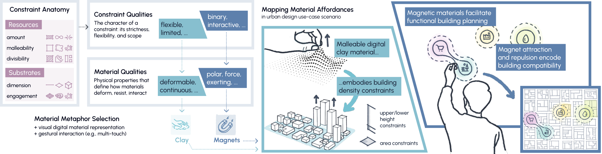

把空间要求留在画布上
设计者修改城市示意图时，常同时想表达街区边界、建筑密度和某处的用途。把这些要求全塞进一句提示，下一轮很难知道哪部分被保留。MaterialVellum把要求放在触控画布上：弹性边界、可塑形表面与位置标记持续可见，手指操作后再调用生成。对海报，也可以先安排不同内容的空间关系，再看生成结果。这给设计团队一个值得测试的交互方向：用户是否更容易指出“只改这里”，并在结果出现后找到对应的控制对象，而不是重新解释整个方案。
MaterialVellum · 论文 · 研究原型

设计者修改城市示意图时，常同时想表达街区边界、建筑密度和某处的用途。把这些要求全塞进一句提示，下一轮很难知道哪部分被保留。MaterialVellum把要求放在触控画布上：弹性边界、可塑形表面与位置标记持续可见，手指操作后再调用生成。对海报，也可以先安排不同内容的空间关系，再看生成结果。这给设计团队一个值得测试的交互方向：用户是否更容易指出“只改这里”，并在结果出现后找到对应的控制对象，而不是重新解释整个方案。
论文的城市示例将黏土形状转换为深度条件，把磁铁位置转换为局部重绘区域及用途提示；海报沙粒的大小与密度还影响缩放等后处理。弹性带则涉及预设模板。因此画面上看起来同样直接的拖动，背后可能是确定性变换，也可能只是向模型提出条件。前者适合检查几何和数值，后者仍需看输出是否遵守意图。产品界面若用相同反馈表示两者，容易让使用者高估可控程度。应当让用户看见哪些属性被固定、哪些只是生成建议，并保留精确修改入口。
原型在大尺寸触控屏上运行，结合物理模拟与本地扩散生成。十名参与者完成引导式城市和海报任务，研究以定性体验为主，没有评估设计成品质量。不同材料的反馈也并非一致积极，因而不能把一个喜欢磁铁操作的反馈推广成整个工具更有效。若团队考虑类似控件，可以先观察首次使用者能否猜对作用、能否把结果错误追溯到输入，以及需要多少次解释。熟悉材料名称不代表熟悉系统给它分配的生成含义。
更具体的试点可以选一个已接受的方案，仅改变一处建筑用途或海报元素大小，记录额外需要修正的部分。对照方案是常规图层、蒙版和数值控件，而不只是纯文字聊天。如果形象的材料操作减少了表达成本，却让邻近内容反复漂移，节省的动作可能被返工抵消。论文提供的是研究原型，未确认可购买产品或价格，也没有长期团队协作证据。是否值得接入，应看重复修改时哪些要求真正保持稳定，以及用户能否明确撤回某一次调整。